<div class="centered">
    <a href="../AR/index.html"> </a>
</div>
        <div id="map">
        </div><!doctype html>
<html lang="en">
    <head>
        <meta charset="utf-8">
        <meta http-equiv="X-UA-Compatible" content="IE=edge">
        <meta name="viewport" content="initial-scale=1,user-scalable=no,maximum-scale=1,width=device-width">
        <meta name="mobile-web-app-capable" content="yes">
        <meta name="apple-mobile-web-app-capable" content="yes">
        <link rel="stylesheet" href="css/leaflet.css"><link rel="stylesheet" href="css/L.Control.Locate.min.css">
        <link rel="stylesheet" href="css/qgis2web.css"><link rel="stylesheet" href="css/fontawesome-all.min.css">
        <style>
        html, body, #map {
            width: 100%;
            height: 100%;
            padding: 0;
            margin: 0;
        }
        </style>
        <title></title>
    </head>
    <body>
	<div class="centered">
    <a href="../AR/index.html"> </a>
</div>
        <div id="map">
        </div>
        <script src="js/qgis2web_expressions.js"></script>
        <script src="js/leaflet.js"></script><script src="js/L.Control.Locate.min.js"></script>
        <script src="js/leaflet.rotatedMarker.js"></script>
        <script src="js/leaflet.pattern.js"></script>
        <script src="js/leaflet-hash.js"></script>
        <script src="js/Autolinker.min.js"></script>
        <script src="js/rbush.min.js"></script>
        <script src="js/labelgun.min.js"></script>
        <script src="js/labels.js"></script>
        <script src="data/percorco_del_26_maggio_1.js"></script>
        <script src="data/percorco_del_25_maggio_2.js"></script>
        <script src="data/percorco_del_27_maggio_3.js"></script>
        <script src="data/POI_Larino_4.js"></script>
        <script>
        var map = L.map('map', {
            zoomControl:true, maxZoom:28, minZoom:1
        })
        var hash = new L.Hash(map);
        map.attributionControl.setPrefix('<a href="https://github.com/tomchadwin/qgis2web" target="_blank">qgis2web</a> &middot; <a href="https://leafletjs.com" title="A JS library for interactive maps">Leaflet</a> &middot; <a href="https://qgis.org">QGIS</a>');
        var autolinker = new Autolinker({truncate: {length: 30, location: 'smart'}});
        L.control.locate({locateOptions: {maxZoom: 19}}).addTo(map);
        var bounds_group = new L.featureGroup([]);
        function setBounds() {
            if (bounds_group.getLayers().length) {
                map.fitBounds(bounds_group.getBounds());
            }
        }
        map.createPane('pane_GoogleSatellite_0');
        map.getPane('pane_GoogleSatellite_0').style.zIndex = 400;
        var layer_GoogleSatellite_0 = L.tileLayer('https://mt1.google.com/vt/lyrs=s&x={x}&y={y}&z={z}', {
            pane: 'pane_GoogleSatellite_0',
            opacity: 1.0,
            attribution: '<a href="https://www.google.at/permissions/geoguidelines/attr-guide.html">Map data ©2015 Google</a>',
            minZoom: 1,
            maxZoom: 28,
            minNativeZoom: 0,
            maxNativeZoom: 20
        });
        layer_GoogleSatellite_0;
        map.addLayer(layer_GoogleSatellite_0);
        function pop_percorco_del_26_maggio_1(feature, layer) {
            var popupContent = '<table>\
                    <tr>\
                        <td colspan="2">' + (feature.properties['Titolo'] !== null ? autolinker.link(feature.properties['Titolo'].toLocaleString()) : '') + '</td>\
                    </tr>\
                    <tr>\
                        <td colspan="2">' + (feature.properties['Descr'] !== null ? autolinker.link(feature.properties['Descr'].toLocaleString()) : '') + '</td>\
                    </tr>\
                </table>';
            layer.bindPopup(popupContent, {maxHeight: 400});
        }

        function style_percorco_del_26_maggio_1_0() {
            return {
                pane: 'pane_percorco_del_26_maggio_1',
                opacity: 1,
                color: 'rgba(6,89,172,1.0)',
                dashArray: '1,5',
                lineCap: 'square',
                lineJoin: 'bevel',
                weight: 4.0,
                fillOpacity: 0,
                interactive: false,
            }
        }
        map.createPane('pane_percorco_del_26_maggio_1');
        map.getPane('pane_percorco_del_26_maggio_1').style.zIndex = 401;
        map.getPane('pane_percorco_del_26_maggio_1').style['mix-blend-mode'] = 'normal';
        var layer_percorco_del_26_maggio_1 = new L.geoJson(json_percorco_del_26_maggio_1, {
            attribution: '',
            interactive: false,
            dataVar: 'json_percorco_del_26_maggio_1',
            layerName: 'layer_percorco_del_26_maggio_1',
            pane: 'pane_percorco_del_26_maggio_1',
            onEachFeature: pop_percorco_del_26_maggio_1,
            style: style_percorco_del_26_maggio_1_0,
        });
        bounds_group.addLayer(layer_percorco_del_26_maggio_1);
        map.addLayer(layer_percorco_del_26_maggio_1);
        function pop_percorco_del_25_maggio_2(feature, layer) {
            var popupContent = '<table>\
                    <tr>\
                        <td colspan="2">' + (feature.properties['Titolo'] !== null ? autolinker.link(feature.properties['Titolo'].toLocaleString()) : '') + '</td>\
                    </tr>\
                    <tr>\
                        <td colspan="2">' + (feature.properties['Descr'] !== null ? autolinker.link(feature.properties['Descr'].toLocaleString()) : '') + '</td>\
                    </tr>\
                </table>';
            layer.bindPopup(popupContent, {maxHeight: 400});
        }

        function style_percorco_del_25_maggio_2_0() {
            return {
                pane: 'pane_percorco_del_25_maggio_2',
                opacity: 1,
                color: 'rgba(240,175,21,1.0)',
                dashArray: '',
                lineCap: 'round',
                lineJoin: 'round',
                weight: 4.0,
                fillOpacity: 0,
                interactive: false,
            }
        }
        map.createPane('pane_percorco_del_25_maggio_2');
        map.getPane('pane_percorco_del_25_maggio_2').style.zIndex = 402;
        map.getPane('pane_percorco_del_25_maggio_2').style['mix-blend-mode'] = 'normal';
        var layer_percorco_del_25_maggio_2 = new L.geoJson(json_percorco_del_25_maggio_2, {
            attribution: '',
            interactive: false,
            dataVar: 'json_percorco_del_25_maggio_2',
            layerName: 'layer_percorco_del_25_maggio_2',
            pane: 'pane_percorco_del_25_maggio_2',
            onEachFeature: pop_percorco_del_25_maggio_2,
            style: style_percorco_del_25_maggio_2_0,
        });
        bounds_group.addLayer(layer_percorco_del_25_maggio_2);
        map.addLayer(layer_percorco_del_25_maggio_2);
        function pop_percorco_del_27_maggio_3(feature, layer) {
            var popupContent = '<table>\
                    <tr>\
                        <td colspan="2">' + (feature.properties['Titolo'] !== null ? autolinker.link(feature.properties['Titolo'].toLocaleString()) : '') + '</td>\
                    </tr>\
                    <tr>\
                        <td colspan="2">' + (feature.properties['Descr'] !== null ? autolinker.link(feature.properties['Descr'].toLocaleString()) : '') + '</td>\
                    </tr>\
                </table>';
            layer.bindPopup(popupContent, {maxHeight: 400});
        }

        function style_percorco_del_27_maggio_3_0() {
            return {
                pane: 'pane_percorco_del_27_maggio_3',
                opacity: 1,
                color: 'rgba(175,29,29,1.0)',
                dashArray: '1,5',
                lineCap: 'square',
                lineJoin: 'bevel',
                weight: 4.0,
                fillOpacity: 0,
                interactive: false,
            }
        }
        map.createPane('pane_percorco_del_27_maggio_3');
        map.getPane('pane_percorco_del_27_maggio_3').style.zIndex = 403;
        map.getPane('pane_percorco_del_27_maggio_3').style['mix-blend-mode'] = 'normal';
        var layer_percorco_del_27_maggio_3 = new L.geoJson(json_percorco_del_27_maggio_3, {
            attribution: '',
            interactive: false,
            dataVar: 'json_percorco_del_27_maggio_3',
            layerName: 'layer_percorco_del_27_maggio_3',
            pane: 'pane_percorco_del_27_maggio_3',
            onEachFeature: pop_percorco_del_27_maggio_3,
            style: style_percorco_del_27_maggio_3_0,
        });
        bounds_group.addLayer(layer_percorco_del_27_maggio_3);
        map.addLayer(layer_percorco_del_27_maggio_3);
        function pop_POI_Larino_4(feature, layer) {
            var popupContent = '<table>\
                    <tr>\
                        <td colspan="2">' + (feature.properties['Titolo'] !== null ? autolinker.link(feature.properties['Titolo'].toLocaleString()) : '') + '</td>\
                    </tr>\
                    <tr>\
                        <td colspan="2">' + (feature.properties['Descr'] !== null ? autolinker.link(feature.properties['Descr'].toLocaleString()) : '') + '</td>\
                    </tr>\
                    <tr>\
                        <td colspan="2">' + (feature.properties['Foto'] !== null ? autolinker.link(feature.properties['Foto'].toLocaleString()) : '') + '</td>\
                    </tr>\
                    <tr>\
                        <td colspan="2">' + (feature.properties['Link'] !== null ? autolinker.link(feature.properties['Link'].toLocaleString()) : '') + '</td>\
                    </tr>\
                </table>';
            layer.bindPopup(popupContent, {maxHeight: 400});
        }

        function style_POI_Larino_4_0() {
            return {
                pane: 'pane_POI_Larino_4',
                radius: 10.0,
                opacity: 1,
                color: 'rgba(35,35,35,1.0)',
                dashArray: '',
                lineCap: 'butt',
                lineJoin: 'miter',
                weight: 1,
                fill: true,
                fillOpacity: 1,
                fillColor: 'rgba(203,0,0,1.0)',
                interactive: true,
            }
        }
        map.createPane('pane_POI_Larino_4');
        map.getPane('pane_POI_Larino_4').style.zIndex = 404;
        map.getPane('pane_POI_Larino_4').style['mix-blend-mode'] = 'normal';
        var layer_POI_Larino_4 = new L.geoJson(json_POI_Larino_4, {
            attribution: '',
            interactive: true,
            dataVar: 'json_POI_Larino_4',
            layerName: 'layer_POI_Larino_4',
            pane: 'pane_POI_Larino_4',
            onEachFeature: pop_POI_Larino_4,
            pointToLayer: function (feature, latlng) {
                var context = {
                    feature: feature,
                    variables: {}
                };
                return L.circleMarker(latlng, style_POI_Larino_4_0(feature));
            },
        });
        bounds_group.addLayer(layer_POI_Larino_4);
        map.addLayer(layer_POI_Larino_4);
        var baseMaps = {};
        L.control.layers(baseMaps,{' POI_Larino': layer_POI_Larino_4,' percorco_del_27_maggio': layer_percorco_del_27_maggio_3,' percorco_del_25_maggio': layer_percorco_del_25_maggio_2,' percorco_del_26_maggio': layer_percorco_del_26_maggio_1,"Google Satellite": layer_GoogleSatellite_0,}).addTo(map);
        setBounds();
        </script>
    </body>
</html>
